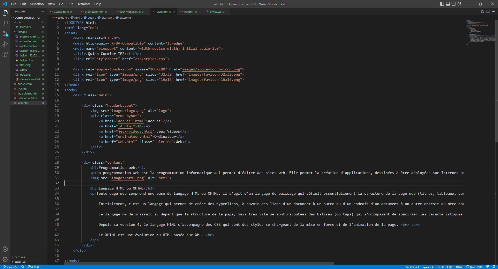

Programmation web
La programmation web est la programmation informatique qui permet d'éditer des sites web. Elle permet la création d'applications, destinées à être déployées sur Internet ou en Intranet.
Langage HTML ou XHTML
Toute page web comprend une base de langage HTML ou XHTML. Il s'agit d'un langage de balisage qui définit essentiellement la structure de la page web (titres, tableaux, paragraphes, listes, etc.).
Initialement, c'est un langage qui permet de créer des hyperliens, à savoir des liens d'un document à un autre ou d'un endroit d'un document à un autre endroit du même document (identificateur de fragment).
Ce langage ne définissait au départ que la structure de la page, mais très vite se sont rajoutées des balises (ou tags) qui s'occupaient de spécifier les caractéristiques de la page web (hiérarchisation du contenu, attributs donnés aux balises...).
Depuis sa version 4, le langage HTML s'accompagne des CSS qui sont des styles se chargeant de la mise en forme et de l'animation de la page.
Le XHTML est une évolution du HTML basée sur XML.